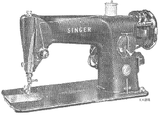
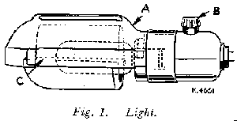
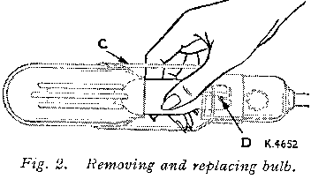
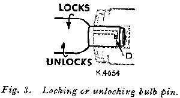
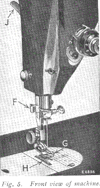
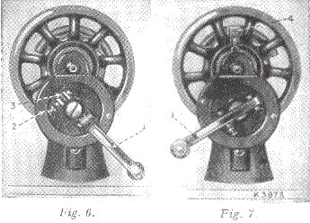
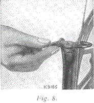
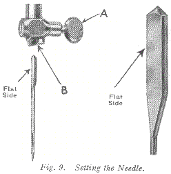

LIGHT
 To Turn Light "on" or "off"To turn on light, reach over machine arm and turn switch B, Fig 1 clockwise. To extinguish light turn switch anticlockwise.
To Remove Bulb
Grasp light socket so that thumb extends over switch B. Press shade with thumb at A to release shade from two catches, and slide it halfway out if shade holder C. Press bulb into socket and at the same time turn bulb over from mchine as far as it will go to unlock pin D (see Figs 3 and 4). Withdraw the bulb.
To insert New Bulb
Press bulb into socket and turn it over toward machine until pin D enters notch in socket (see Fig 3). Return shade to its normal position as shown in Fig 1.

IF MACHINE IS ELECTRICALLY OPERATED
Raise presser foot G by means of presser bar lifter J to prevent injury to the foot G and feed H.
Place a piece of material under presser foot and let the foot down upon it. Turn on electric current and, if the combination knee and foot controller is installed as a knee controller, press knee lever to the right.
If controller is placed on the floor to be used as a foot controller, press down on pedal of controller.
The speed of the machine is controlled entirely by the amount of pressure applied to the controller.
Operate the machine in this way, without being threaded, until you have become accustomed to guiding the material and operating the controller.
IF THE MACHINE IS HAND OPERATED
When the machine is uncovered, the hand attachment will be gound to be out of working position as shown in Fig 6. Pull the small spring stud 2, and trun the handle back until the lever 1 enters the socket 3. Press back the hinged finger 4, Fig 7 between the spokes of the wheel. The machine is now ready for working, as shown in Fig 7.
TO OPERATE THE HAND MACHINE
Place a piece of material under the presser foot G, Fig 5, and lower the latter by means of the lifter J.
Now turn the handle over from you to work the machine, without being threaded, until you are accustomed to guiding the material with the left hand.
IF THE MACHINE IS TREADLE OPERATED
Loosen the hand wheel by turning stop motion screw 17, Fig 12, over toward you, place both feet upon the treadle and turn the hand wheel over toward you, at the same time allowing the feet to move freely and lightly with the motion of the treadle.
Continue to do this until a regular and easy movement is acquired and you are able to work the treadle so that you can re-start the machine with the wheel turning toward you.
When familiar with the working movement, tighten the hand wheel by turning the stop motion screw over from you, and place a piece of material under the presser foot G, Fig 5.
Lower the latter by means of the lifter and again work the machine, without being threaded, until you are accustomed to guiding the material.
The belt should be only just tight enough not to slip. If too loose, shorten and rejoin.
BELT SHIFTER
This device simplifies throwing off and replacing the belt. To throw off the belt, move the belt shifter to the left (see Fig 8), working the treadle at the same time. To replace the belt, work the treadle slowly with the band wheel turning toward you, when a revolution or two of the wheel will bring the belt back into its place.
NEEDLES AND THREAD
This machine uses a 15 x 1 Needle - available in sizes 9, 11 ,14 ,16 ,18 ,19 , and 21.
TO SET THE NEEDLE
Raise needle bar to its highest position and loosen thumb screw A in needle clamp. Insert needle with its flat side to the left up into the needle clamp B as far as it will go, then tighten thumb screw A.